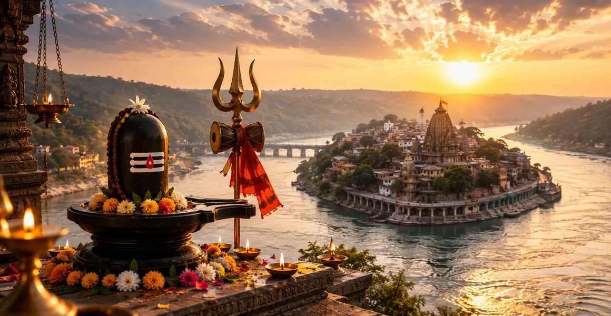

पवित्र ओंकारेश्वर
कोटिरुद्र संहिता का बारहवां अध्याय पवित्र नर्मदा नदी के किनारे मांधाता के पवित्र द्वीप पर स्थित ओंकारेश्वर ज्योतिर्लिंग की दिव्य कथा और आध्यात्मिक महिमा की पड़ताल करता है।
यह विंध्य पर्वत की तपस्या, देवों की प्रार्थनाओं और पवित्र शब्दांश 'ओम' के मूल आकार में भगवान शिव की अभिव्यक्ति का वर्णन करता है।
यह अध्याय बताता है कि ओंकारेश्वर पर ध्यान करने से साधक की चेतना ब्रह्मांड के मूलभूत कंपन के साथ कैसे जुड़ जाती है।
अध्याय 12 की मुख्य बातें
मांधाता द्वीप
ओंकारेश्वर एक पवित्र द्वीप पर स्थापित है जिसका आकार प्राकृतिक रूप से पवित्र 'ओम' जैसा है।
नर्मदा का आलिंगन
पवित्र नर्मदा नदी मंदिर के चारों ओर बहती है, जो इसकी आध्यात्मिक शक्ति को बढ़ाती है।
विंध्य की तपस्या
विंध्य पर्वत ने उन्नति पाने के लिए शिव की कठोर आराधना की।
मौलिक ध्वनि
लिंग प्रणव (ओम) की सर्वोच्च ब्रह्मांडीय प्रतिध्वनि को प्रकट करता है।
दोहरा रूप
देवता की पूजा दो अलग-अलग रूपों में की जाती है: ओंकारेश्वर और अमरेश्वर।
परम शांति
ओंकारेश्वर की तीर्थयात्रा मानसिक स्पष्टता और आध्यात्मिक मुक्ति प्रदान करती है।
इस अध्याय में मुख्य विषय
विंध्य पर्वत का गौरव और तपस्या
अध्याय 12 की शुरुआत इस वर्णन से होती है कि कैसे विंध्य पर्वत, अहंकार से ग्रस्त और मेरु पर्वत से आगे निकलने की इच्छा से गंभीर तपस्या में लगा हुआ था।
महीनों तक गहन भक्ति के साथ भगवान शिव की मिट्टी की छवि की पूजा करके, विंध्य ने अजेय विकास और वर्चस्व का वरदान मांगा।
देवताओं और ऋषियों की प्रार्थनाएँ
जैसे ही विंध्य इतना बड़ा हो गया कि उसने सूर्य का मार्ग अवरुद्ध करना शुरू कर दिया, देवता और ऋषि बहुत चिंतित हो गए और मदद के लिए भगवान शिव के पास पहुंचे।
उनके संकट से प्रेरित होकर, भगवान शिव ने विंध्य के अहंकार पर लगाम लगाने का वादा किया और साथ ही पहाड़ को आध्यात्मिक संतुष्टि भी प्रदान की।
ओंकारेश्वर लिंग का प्राकट्य
उनकी तपस्या के दौरान दिखाई गई सच्ची भक्ति से प्रसन्न होकर, भगवान शिव विंध्य के सामने प्रकट हुए और दो अलग-अलग रूपों में विभाजित होकर उन्हें आशीर्वाद दिया।
एक भाग ओंकारेश्वर के रूप में प्रकट हुआ, जो मौलिक ध्वनि 'ओम' का प्रतीक है, जबकि दूसरा पास में ही अमरेश्वर के रूप में प्रकट हुआ।
नर्मदा नदी का पवित्र प्रवाह
पाठ में मांधाता द्वीप पर स्थित मंदिर की भव्य सेटिंग पर प्रकाश डाला गया है, जो कि नर्मदा नदी के तेज और शुद्ध करने वाले पानी से घिरा हुआ है।
नर्मदा में स्नान करने और ओंकारेश्वर के दर्शन करने से तीर्थयात्री की सभी अशुद्धियाँ शुद्ध हो जाती हैं और दैवीय कृपा प्राप्त होती है।
दोहरे रूप: ओंकारेश्वर और अमरेश्वर
इस पवित्र स्थल पर आने वाले उपासकों को निर्देश दिया जाता है कि वे द्वीप पर ओंकारेश्वर और नदी तट के पार अमरेश्वर दोनों के दर्शन करें।
यह दोहरी पूजा तीर्थयात्रा को पूरा करती है और पवित्र ग्रंथों में निर्धारित पूर्ण आध्यात्मिक पुरस्कार प्राप्त करती है।
ओंकारेश्वर की पूजा का आध्यात्मिक फल
इस ज्योतिर्लिंग की पूजा करते समय प्रणव मंत्र का जाप करने से प्राप्त होने वाले असाधारण आध्यात्मिक फलों का विवरण देकर कथा समाप्त होती है।
भक्तों को अपनी इंद्रियों पर नियंत्रण, गहरी आंतरिक शांति और परम आध्यात्मिक मुक्ति की ओर एक स्पष्ट मार्ग प्राप्त होता है।
अध्याय 13 की ओर
नर्मदा के तट पर ओंकारेश्वर की दिव्य महिमा स्थापित करने के बाद, कथा सुचारू रूप से अध्याय 13 में स्थानांतरित हो जाती है।
पाठकों को राजसी हिमालयी मंदिर और केदारनाथ की अभिव्यक्ति का पता लगाने के लिए आगे बढ़ने के लिए निर्देशित किया जाता है।
अध्याय 12 की मुख्य शिक्षाएँ
प्रारंभिक ध्वनि कनेक्शन
ओम का ध्यान मानव चेतना को ब्रह्मांडीय निर्माता के साथ संरेखित करता है।
अहंकार को वश में करना
ईश्वरीय अनुशासन से अहंकार और अति-महत्वाकांक्षा स्वाभाविक रूप से शांत हो जाती है।
दोहरी पूजा
दोनों तीर्थस्थलों को पूरा करने से तीर्थयात्रा की पूर्ण आवश्यकताएं पूरी होती हैं।
नदी पवित्रीकरण
नर्मदा नदी नश्वर पापों की सजीव सफ़ाई करने वाली के रूप में कार्य करती है।
आंतरिक शांति
ओंकारेश्वर की भक्ति गहरा भावनात्मक और मानसिक संतुलन लाती है।
पवित्र भूगोल
प्राकृतिक भौगोलिक संरचनाएँ ब्रह्मांडीय आध्यात्मिक सत्य को प्रतिबिंबित करती हैं।
आध्यात्मिक चिंतन
ओंकारेश्वर की कथा हमें याद दिलाती है कि ब्रह्मांड ओम के शाश्वत कंपन से कायम है। जब हमारा मन विंध्य पर्वत की तरह अहंकार से घिर जाता है, तो शिव के प्रति सच्चा समर्पण ब्रह्मांडीय व्यवस्था के साथ हमारे उचित संरेखण को बहाल करता है। नर्मदा द्वारा निर्मित द्वीप हमें आत्मा के शांत, अपरिवर्तित अभयारण्य को खोजने के लिए सांसारिक भ्रम के अशांत पानी को पार करते हुए, अंदर की ओर यात्रा करने के लिए आमंत्रित करता है।
अध्याय 12 का संदेश जीना
अपनी दैनिक जागरूकता को पवित्र प्रणव मंत्र (ओम) के दोहराव और चिंतन में संलग्न करें।
जीवन की महत्वाकांक्षाओं को विनम्रता के साथ स्वीकार करें, यह सुनिश्चित करें कि व्यक्तिगत विकास आध्यात्मिक धर्म द्वारा निर्देशित हो।
अपने आप को पवित्र चिंतन में डुबो कर और पवित्र प्राकृतिक पारिस्थितिक तंत्र का सम्मान करके आंतरिक शुद्धि की तलाश करें।
प्रमुख आध्यात्मिक अवधारणाएँ
प्रणव का स्वामी, 'ओम' के आकार में प्रकट होता है।
नर्मदा पर स्थित पवित्र द्वीप में प्राथमिक तीर्थस्थल है।
ओंकारेश्वर के साथ शिव के अमर रूप की पूजा की जाती है।
मौलिक पवित्र शब्दांश ओम सर्वोच्च चेतना का प्रतिनिधित्व करता है।
वह पर्वत जिसकी तपस्या से मंदिर की स्थापना हुई।
पवित्र करने वाले नदी तट मुक्ति और शांति प्रदान करते हैं।
अध्याय सारांश
कोटिरुद्र संहिता अध्याय 12 में ओंकारेश्वर की मनोरम कथा का विवरण है। जब विंध्य पर्वत ने कठोर तपस्या की, तो भगवान शिव प्रकट हुए और नर्मदा नदी के किनारे मांधाता द्वीप पर ओंकारेश्वर और अमरेश्वर के दोहरे रूप में प्रकट हुए। ओम की मौलिक ध्वनि को मूर्त रूप देकर, यह मंदिर शाश्वत शांति और आध्यात्मिक मुक्ति प्रदान करता है, जो अध्याय 13 में केदारनाथ की खोज के लिए मंच तैयार करता है।
अक्सर पूछे जाने वाले प्रश्न
1. कोटिरुद्र संहिता अध्याय 12 का मुख्य विषय क्या है?
अध्याय 12 में ओंकारेश्वर ज्योतिर्लिंग की पवित्र कथा, अभिव्यक्ति और सर्वोच्च आध्यात्मिक महत्व का विवरण दिया गया है।
2. ओंकारेश्वर ज्योतिर्लिंग कहाँ स्थित है?
ओंकारेश्वर पवित्र नर्मदा नदी के तट पर मांधाता के पवित्र द्वीप पर स्थित है।
3. ओंकारेश्वर में 'ओम' रूप का क्या महत्व है?
द्वीप और लिंग स्वाभाविक रूप से मौलिक ध्वनि 'ओम' का आकार लेते हैं, जो सर्वोच्च ब्रह्मांडीय कंपन और सभी सृष्टि के स्रोत का प्रतिनिधित्व करता है।
4. ओंकारेश्वर की पूजा से क्या वरदान मिलता है?
ओंकारेश्वर की पूजा करने से मानसिक शांति, धार्मिक इच्छाओं की पूर्ति और सांसारिक बंधन से मुक्ति मिलती है।
5. अध्याय 12 आसपास के अध्यायों से कैसे जुड़ता है?
अध्याय 12 अध्याय 11 (महाकालेश्वर की महानता भाग - 2) के बाद आता है और अध्याय 13 (केदारनाथ का प्रकटीकरण) से पहले आता है।
6. इस अध्याय का मुख्य आध्यात्मिक निष्कर्ष क्या है?
ओंकारेश्वर के मंदिर के माध्यम से ओम की मौलिक ध्वनि पर ध्यान करने से आत्मा शिव की शाश्वत चेतना के साथ जुड़ जाती है।
"नर्मदा के तट पर मांधाता द्वीप पर स्थापित, ओंकारेश्वर सृष्टि के मौलिक कंपन से गूंजता है।"
कोटिरुद्र संहिता के माध्यम से जारी रखें
अध्याय 12 पवित्र ओंकारेश्वर का अन्वेषण करता है। अध्याय 13, केदारनाथ की अभिव्यक्ति को जारी रखें।